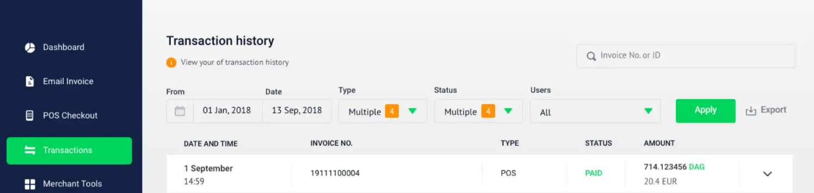
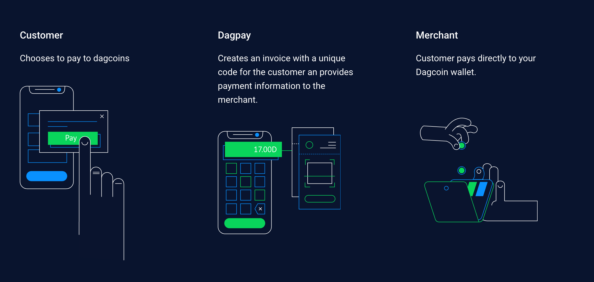
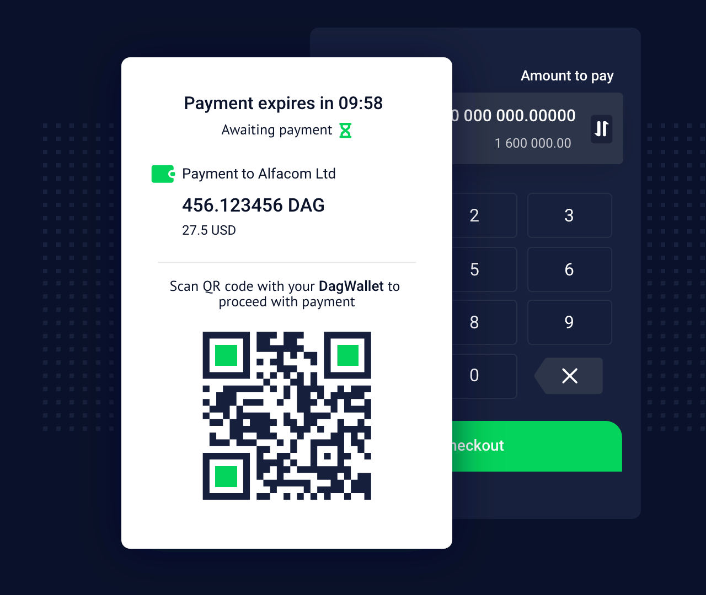
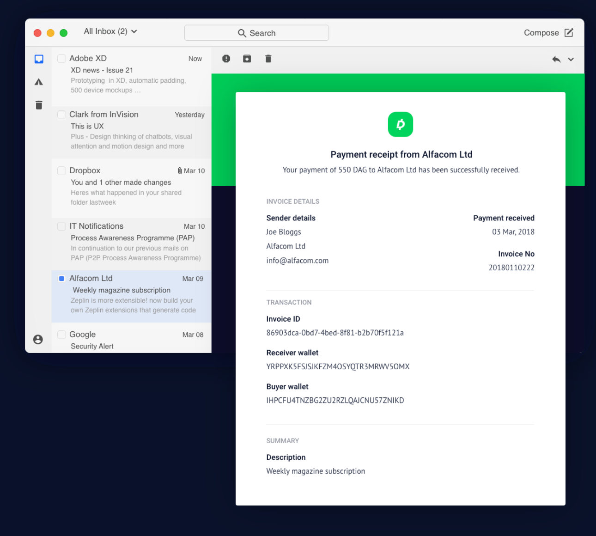

Case study 03 · Dagpay
Getting merchants onboarded, then deciding how they get paid
Dagpay is a payment gateway that lets merchants accept Dagcoin, a cryptocurrency. I joined as product manager while it was still being conceived and shaped the platform around a barebones API. Two decisions stand out: replacing strict KYC with tiered onboarding, which let most merchants through, and the order of the three invoicing channels, where usage data let me stop investing in the one that was barely used.
- Problem
- Strict KYC kept merchants, small businesses above all, from getting through onboarding on a platform meant to work globally.
- Decision
- Replace it with three tiers: start accepting payments under a monthly volume cap, provide more documents to raise it.
- Result
- More merchants completed onboarding and got to a first payment faster. More than 5,000 merchants onboarded over time.
01Where it started
When I joined at the end of 2018, Dagpay did not exist yet as a product. A first, barebones version of the API payment flow had been started, with no platform around it. My job was to imagine the rest:
- The invoice payment flow itself: the customer pays from their crypto wallet by scanning a QR code.
- Merchant account creation, onboarding and KYC.
- Transaction details, and an overview of all of a merchant’s transactions.
- Draft FAQ material to support onboarding.
Two parts of that turned into the decisions below: how much a merchant had to prove before accepting payments, and which ways of invoicing to build, in what order.

02Onboarding: from strict KYC to tiers
To set the KYC requirements, I researched how competing platforms such as BitPay and Crypto.com handled them, and worked out with the company’s legal team what merchants had to provide before they could accept payments.
The first requirements were very strict. Before accepting a single payment, a merchant had to provide company registration documents, proof of address, ID for directors and beneficial owners, and a description of the business. For a small business that was a heavy burden, and in some countries merchants did not have all of these documents at all. That was a real problem for a platform meant to work globally from the start, since cross-border payments are one of the main reasons to use a cryptocurrency. It was clear early on that merchants struggled to get through.
It was also more than the service called for. Unlike many crypto payment gateways, Dagpay never held or moved the funds: it tracked payments between crypto wallets on the public blockchain, monitored their status and gave the merchant an overview.


After the initial launch I pushed back to relax the requirements and proposed tiered onboarding instead. Each tier capped monthly payment volume, with limits agreed with the legal team to comply with the regulations of the time:
- Tier 1: a low monthly cap Where every merchant started, with the least documentation.
- Tier 2: a higher cap Unlocked by providing more company documentation and proof.
- Tier 3: no cap Unlocked by providing the most documentation and proof.
Merchants moved up from inside the Dagpay web app: they uploaded documents there, and could see their limit and how much of it they had used. When they neared their cap, they were told by email in advance. The support team reviewed the documents by hand against internal compliance rules, within 48 hours.
Tiered onboarding shipped. It let most merchants get through onboarding, and they got to their first payment faster.
03Three channels, and the order I chose
Merchants sold in different ways: through platforms and online shops, at a counter, or, mostly freelancers, one client at a time. Each needed its own way to invoice, and we could not build all three at once.
- API and shop plugins A first version existed when I joined. Custom integrations for the products in the Dagcoin ecosystem that already accepted it, and plugins for WooCommerce and Magento. This channel carried most of the payment volume.
- Point-of-sale app An Android and iOS app for brick-and-mortar shops, in line with the strategy of making payments as easy as possible to accept in person.
- Invoice links by email For freelancers and one-off invoices. A niche next to the other two, built last, at the request of stakeholders and management.
In person


By email


I expected email invoicing to see little use. When we added analytics to it, the data confirmed that: usage was low. That gave me grounds to push back on developing it further and to put the time into use cases that were worth more.
Built
- The API, with custom integrations for ecosystem platforms and plugins for WooCommerce and Magento.
- The point-of-sale app for Android and iOS.
- Invoice links by email, with usage analytics.
Cut
- Further work on email invoicing, once the analytics showed low usage.
- Plugins for OpenCart, PrestaShop and Easy Digital Downloads, retired soon after launch because there was little or no interest.
04How I worked
I wrote the PRDs, planned the releases, ran the agile ceremonies and saw features through to shipping. Nearly the whole platform started as my wireframes, user journeys and mockups. I evaluated them with stakeholders and test users, then handed them to the design team for branding and polish. A strong in-house technical team built it.
05The result
More than 5,000 merchants onboarded over time, and thousands of transactions a day at the peak. Each decision above had its own outcome:
- Tiered onboarding Let most merchants get through onboarding, and they got to their first payment faster.
- The API first Carried most of the transactions, from ecosystem platforms such as a crypto exchange. The WooCommerce and Magento plugins were used by a few merchants.
- Measuring email invoicing Usage data confirmed the channel was barely used, which gave me grounds to push back on further development and put the time into more valuable use cases.
06What I took from it
Taking Dagpay from a barebones API to a platform with more than 5,000 merchants taught me a lot about building a product end to end. Looking back, we added features when we should have tested demand first and changed course sooner. Email invoicing is the pattern I would repeat: measure early, and let the numbers decide what gets built next.